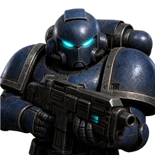

①이중 테두리
밝은 선 바깥에 어두운 선을 한 겹 더. 어떤 바닥에서도 판이 또렷하게 뜬다.
×218px
×225px
안쪽(얼굴 · 아래 진행선 · 위 캡슐)은 여덟 안이 전부 같다 — 달라지는 것은 테두리뿐이다.
왼쪽이 축소(18px), 오른쪽이 확대(25px) — 실제 크기 그대로. 작을 때가 판가름이다.
얇은 선 한 겹 + 바깥 그림자. 바닥이 밝으면 선이 묻힌다.

×218px밝은 선 바깥에 어두운 선을 한 겹 더. 어떤 바닥에서도 판이 또렷하게 뜬다.
위가 밝고 아래로 사라지는 1px 링 — 환생 버튼과 같은 어휘. 빛이 위에서 온다.
왼쪽 위·오른쪽 아래를 잘라 낸 각진 SF. 프로젝트의 판 어휘와 곧장 이어진다.
네 변을 지우고 두 귀퉁이만 — 조준선 느낌. 가장 가볍고 판을 안 가둔다.
바깥 선을 없애고 안쪽에서 빛이 돈다 + 옅은 청록 번짐. 가장 부드럽다.
어두운 선 + 밝은 금속 선 + 위아래 베벨. 두께가 느껴진다 — 가장 묵직하다.
테두리를 죽이고 진행선을 두껍게 — 판과 게이지가 한 몸이 된다.
②와 ③을 합친다 — 각진 실루엣에 위에서 오는 빛. 가장 하이엔드에 가깝다.